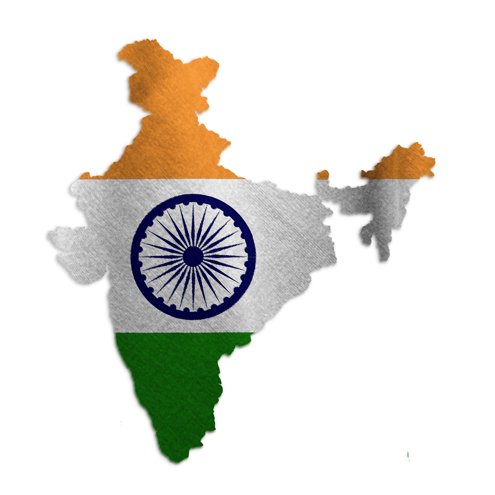
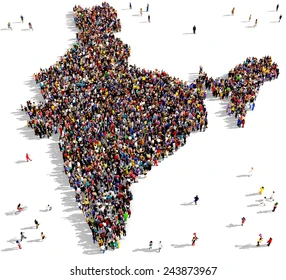
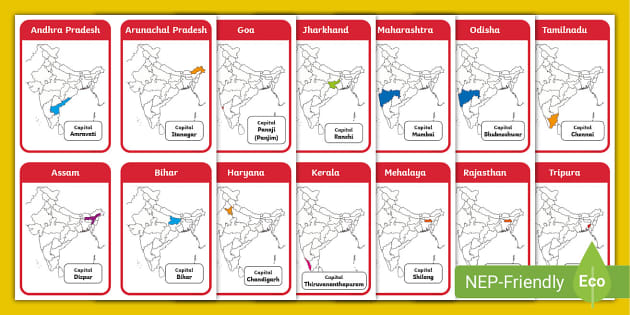

INDIA
India is a vast and diverse country located in South Asia. It is the seventh largest country in the world by area and the second most populous nation. India is known as the world’s largest democracy with a strong parliamentary system. The capital of India is New Delhi, while Mumbai is the financial hub. The country gained independence from British rule on 15th August 1947. India has 28 states and 8 Union Territories, each with its own unique culture, language, and traditions. The Indian Constitution recognizes 22 official languages, with Hindi and English widely used. India is a land of unity in diversity where people of different religions, castes, and communities live together. The country is famous for its rich cultural heritage, classical music, dance forms, and colorful festivals like Diwali, Holi, and Eid. Geographically, India is blessed with the Himalayan mountains, fertile plains, deserts, and long coastlines. It is home to the holy rivers Ganga, Yamuna, and Brahmaputra. India’s national symbols include the Tiger, Peacock, and Mango. The Tiranga, or tricolor flag, represents its pride and sovereignty. India has given the world yoga, Ayurveda, and spiritual philosophies. It is also famous for monuments like the Taj Mahal, Red Fort, and Qutub Minar. Economically, India is one of the fastest-growing countries in the world. The Indian Space Research Organisation (ISRO) has made global achievements with missions like Chandrayaan and Mangalyaan. India also has one of the largest armed forces ensuring national security. With its balance of tradition and modernity, India shine on the global stage.

LOCATION :-
Location means the specific place or position of something on the Earth’s surface. It helps to identify where a person, object, or place is situated. In geography, location is described using latitude and longitude. Absolute location refers to the exact coordinates of a place. Relative location explains a place in relation to other places, like “near a river” or “next to a school.” Location is very important for maps, navigation, and travel. It also helps in studying climate, culture, and resources of an area. Modern technology like GPS and Google Maps uses location to guide people. Every country, city, or village has its own unique location on the globe. Thus, location helps us connect with the world and understand where things exist.
POPULATION :-
Population means the total number of people living in a particular area or country. It shows how many individuals share the same land, resources, and facilities. The world’s population is measured in billions and keeps increasing every year. Population growth depends on birth rate, death rate, and migration. A high population can lead to problems like unemployment, poverty, and lack of resources. At the same time, a large population provides manpower for development. Population density tells us how crowded a place is by showing people per square kilometer. Countries like India and China have the highest populations in the world. Governments study population through .

CAPITALS :-
A capital is the main city of a country or state where the government is located. It serves as the political, administrative, and cultural center. Important offices like the President’s house, Parliament, and Supreme Court are usually found in the capital. Capitals are often chosen for their central location, history, or importance. For example, New Delhi is the capital of India, and Washington, D.C. is the capital of the USA. A capital city represents the identity and pride of the nation. It is also a hub for foreign embassies, trade, and communication. Many capitals are developed with modern facilities, transport, and infrastructure. Some countries even have more than one capital, like South Africa.

GOVERMENT :-
Government is the system through which a country or state is organized and managed. It makes laws and rules to maintain order and justice in society. The main role of government is to protect the rights of citizens and provide security. It also works to develop the nation by building schools, hospitals, and roads. Governments collect taxes to run the country and provide public services. There are different types of governments such as democracy, monarchy, and dictatorship. In a democracy, people elect their leaders through voting. The government is usually divided into three parts: legislature, executive, and judiciary. Each part has its own powers and responsibilities.

STATES & UTS :-
India is divided into States and Union Territories (UTs) for easy administration. States have their own governments, while UTs are governed directly by the Central Government, though some have legislatures. Currently, India has 28 States and 8 Union Territories. Each state has a capital city and is ruled by an elected Chief Minister. The Governor represents the President in every state. Union Territories like Delhi, Puducherry, and Jammu & Kashmir have their own legislatures, while others like Chandigarh and Lakshadweep are fully controlled by the Centre. States are larger in area and population compared to UTs. They are formed on the basis of language, culture, and geography.
